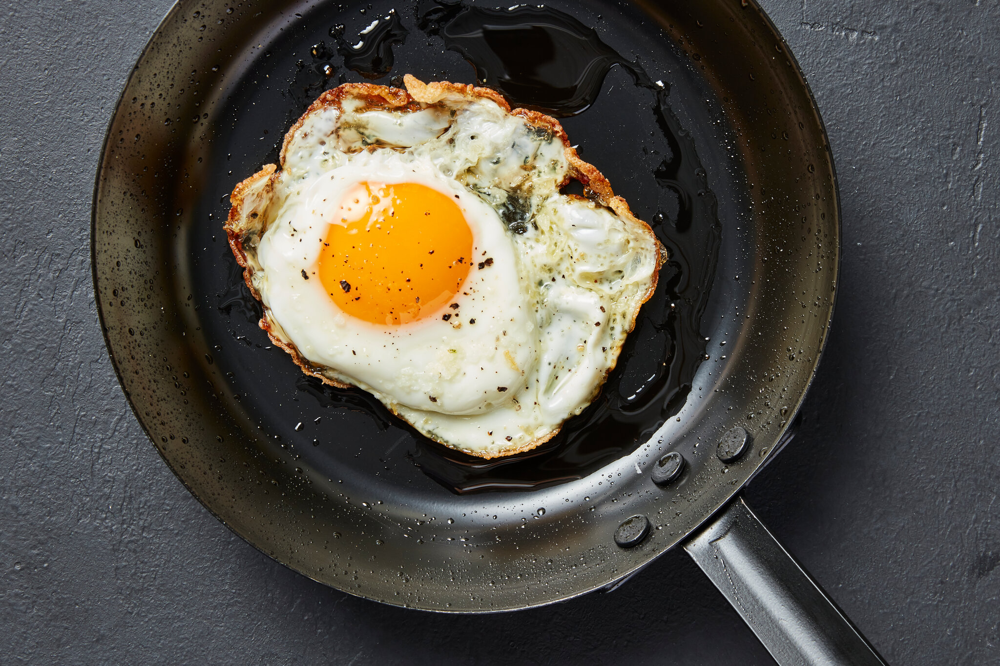

Fried Egg

Description
A fried egg is a cooked dish made from one or more eggs which are removed from their shells and placed into a frying pan and fried. They are traditionally eaten for breakfast in many countries but may also be served at other times of the day.(Wikipedia)
Ingredients
- Egg
- Vegetable oil
- Salt(optional)
- Pepper(optional)
Steps
- Pour oil on frying pan
- Turn on the fire and wait for the oil to be little steamy
- Drop the egg
- Wait for the bottom of the egg to be brown to get crispy and salty result
- Turn off the fire
- Serve the fried egg